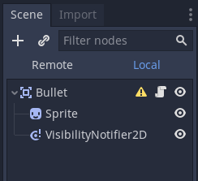
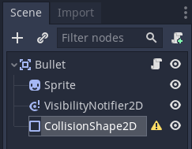
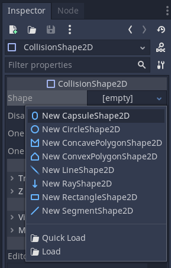
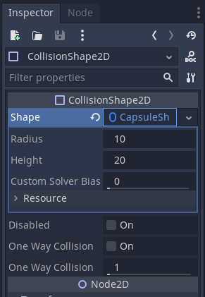
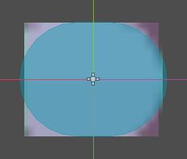
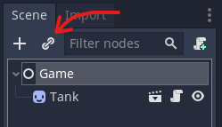
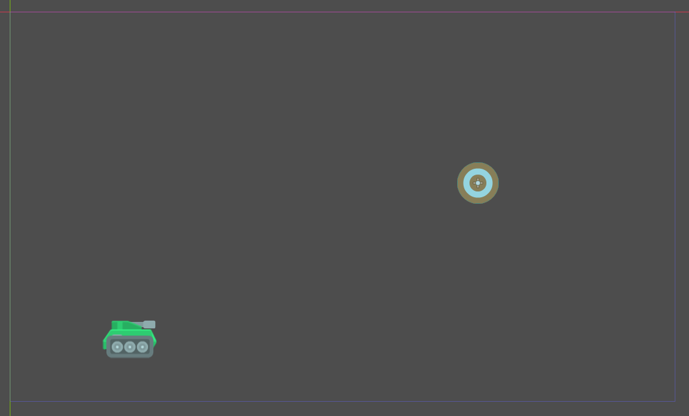

Introduction
Hello students,
For those of you who will not be able to make it to Saturday's programming lesson, I wrote what I plan to cover here. Please look through these instructions and make the code changes on your own. If you have any questions or problems, feel free to ask for assistance in the team Discord, in the Programming channel.
Let's begin!
Refactor Existing Code
Before adding new functionality to our game, let's first make some improvements to the current code.
Store Bullet Speed in Vector
In Bullet.gd, we have the following two lines around the top of the file:
var speed_x
var speed_y
Although these variables are different values, they both represent a component of the same thing: the bullet's speed. When variables have a common relationship like this, it is common to put them together somehow. In this case, we will store both components of the bullet's speed in a vector.
A vector is a type of variable that has two components: an "x" value and a "y" value. In fact, you have already worked with vectors before. Look in the bullet's _process function:
self.position.x += delta * speed_x
self.position.y += delta * speed_y
self.position returns a vector. We then got the "x" and "y" components with .x and .y, respectively. We will use the same concept to store the bullet's speed. Make the following change (remove the red text and add the green text):
- var speed_x
- var speed_y
+ var speed = Vector2()
Next, change the init function to the following:
func init(angle):
- speed_x = SPEED * cos(angle)
- speed_y = SPEED * sin(angle)
+ speed.x = SPEED * cos(angle)
+ speed.y = SPEED * sin(angle)
Next, change the _process function to the following:
func _process(delta):
- self.position.x += delta * speed_x
- self.position.y += delta * speed_y
- self.rotation = atan(speed_y / speed_x)
- speed_y += GRAVITY
+ self.position.x += delta * speed.x
+ self.position.y += delta * speed.y
+ self.rotation = atan(speed.y / speed.x)
+ speed.y += GRAVITY
Run your game and make sure it still works.
Replace atan with look_at
Now that we are storing the bullet's speed in a vector, let's take advantage of it! Our code currently calculates the rotation of the the bullet with the atan function. Although this works, it might be confusing for someone who it not familiar with trigonometry. Instead, we will replace it with an easier-to-understand function: look_at.
Every Node2D (including our Bullet, an Area2D which inherits Node2D) has a function called look_at. You pass this function a vector, and the Node2D will rotate to look at the coordinates provided. For example, the code self.look_at(Vector2(0, 0)) would make the Node2D rotate to look at the coordinate (0, 0), which is the top-left corner of the game window. We want our bullet to look at the direction it is moving. We can do this by adding the bullet's current position with its current speed.
Change the following line in the _process function:
func _process(delta):
self.position.x += delta * speed.x
self.position.y += delta * speed.y
- self.rotation = atan(speed.y / speed.x)
+ self.look_at(self.position + speed)
speed.y += GRAVITY
Run your game and make sure it still works.
Move New Bullet to End of Cannon
Currently, our bullet's position is being initialized to the position of the cannon, which ends up being the base of the cannon because of the offset changes we made. This looks weird when shooting the bullet. We can see it moving along the entire cannon length. It would look better if the bullet's position was initialized to be the end of the cannon.
Fortunately, we can use our speed vector and the angle of the cannon to do this. Add the following constant at the top of the file:
const SPEED = 800
const GRAVITY = 15
+ const CANNON_LENGTH = 30
var speed = Vector2()
Next, add the following line to the init function:
func init(angle):
speed.x = SPEED * cos(angle)
speed.y = SPEED * sin(angle)
+ self.position += speed.normalized() * CANNON_LENGTH
Recall that speed is a vector with "x" and "y" values. Vectors can also be thought to have a "length" and a "direction." For example, consider this triangle.

This triangle could be considered a vector where x = 4 and y = 3. In this case, the vector's length is 5 and its direction is 36.87 degrees.
In a similar way, speed has a length and a direction. It's length should be equal to the SPEED constant and its direction should be equal to the angle variable in the init function. What we want to do is modify this vector by reducing its length while maintaining its angle. The normalized function changes the vector to have a length of 1 while maintaining the angle. Then, we multiply it by CANNON_LENGTH to change the vector's length to the length of the cannon while maintaining the angle.
Run your game and make sure it still works. You may have to adjust CANNON_LENGH depending on which bullet image you chose. Now with these code changes made, let's start doing some collision detection!
Bullet Collision
Open the Bullet scene in the 2D view. In the Scene tab, notice the yellow warning on the Bullet node.

Recall the the Bullet node is an Area2D. This means that it will detect collisions. However, it needs to know what shape it is. It does not use the Sprite's image to detect a collision, we have to explicitly give it a shape, whether that shape is a rectangle, circle, or something else. To do this, add a CollisionShape2D as a child to the Bullet.

Now the Bullet node is happy, but the CollisionShape2D is complaining. This is because we have to tell it what shape it is. With the CollisionShape2D selected, find the Shape property in the Inspector tab in the top-right. Click on [empty] and select "New CapsuleShape2D."

In the 2D view, we can see a blue capsule appear over the bullet. This represents the collision of the bullet. We will have to rotate it to align with the bullet's direction. In the Inspector tab, under the Node2D properties, expand the Transform line and change Rotation Degrees to 90.

Now let's change the size of the capsule. Where [empty] used to be will be replaced with CapsuleShape2D (may be truncated to "CapsuleSh" or similar). Click on this again and some properties should appear below.

I changed the Radius to 7 and the Height to 4. You may have to choose different values depending on the bullet sprite you chose. After this, the blue area should cover the bullet nicely.

Save the bullet scene. Next, we will create a target.
Target
With our bullet created, now we have to give it something to hit. The steps to set up the target scene have largely been covered previously, so I will provide higher-level instructions. If you have trouble, let me know on Discord.
Set Up the Scene
- Create a new scene.
- Set the root node to be an Area2D, just like the bullet scene. Rename this node "Target."
- Add a Sprite as a child of the "Target" node
- Copy a target image to the game folder. Here is a good image:
Kenney Game Assets\2D assets\Shooting Gallery\PNG\Objects\target_red3.png - Set the Sprite texture to the image you selected.
- Add a CollisionShape2D as a child of the "Target" node
- Set the Shape of the CollisionShape2D to a CircleShape2D. Set its radius to 64.
- Save the scene.
- Attach a script to the Target node. Delete all of the comments in the script file.
Change the view from the Script view to the 2D view. Go to the Game scene. The 2D view should show the tank. To the right of the "Add Node" button (looks like a plus sign) is another button that looks like a couple of chain links. This is the "Instance" button and is how you can add pre-made scenes, such as our new Target scene.

With the Game node selected, click this Instance button. In the scene list window, select the Target scene. You should see your target appear in the top-left. Move it to an appropriate position. Also, I think the target is a bit too big, so let's scale it down. Select the Target and in the Inspector tab, under Node2D properties, expand the Transform line and change the Scale x and y values both from 1 to 0.5. Your Game scene should look like this:

Write the Code
When an Area2D collides with another Area2D, this emits a signal called "area_entered." We will leverage this by connecting the signal to a function containing what we want to do when a bullet hits the target.
In the Target script, modify the _ready function to look like this:
func _ready():
+ self.connect("area_entered", self, "on_hit")
This is saying that when the target emits an "area_entered" signal, it will call the on_hit function in the Target code. Currently, the Target code does not have this function, so let's add it at the bottom.
func _ready():
self.connect("area_entered", self, "on_hit")
+ func on_hit(area):
+ print("Target hit!")
Run the game and test it out. Aim your shot to hit the target. If your bullet hits the target, the output console should print "Target hit!"
With collision detection working, let's do something more appropriate than simply printing. We can start by deleting the bullet. Notice that the on_hit function contain a parameter: area. This represent the Area2D that hit the target. In our case, this will always be a bullet. So let's delete it with queue_free.
func on_hit(area):
- print("Target hit!")
+ area.queue_free()
Random Position
Next, let's move the target to another position when it gets hit. We want this new position to be randomly chosen. Specifically, let's require that the new x-coordinate be between 400 and 900, and the new y-coordinate be between 100 and 400. For now, let's focus on the y-coordinate (100-400 range)
Godot provides a couple ways to do randomness. We will use the randi function. This function generates a random unsigned 32-bit integer. This is a fancy way of saying that it will generate a value between 0 and 4294967295. Now, for the y-coordinate, this range is not what we need. Fortunately, we can use a cool new operator, the modulo operator: %.
This operator is similar to the division operator: /. However, instead of calculating the quotient of the division, the modulo operator returns the remainder of the division. For example, 13 divided by 5 is "2 remainder 3" because 2 * 5 + 3 = 13. In terms of how these operators behave in actual code, 13 / 5 = 2 and 13 % 5 = 3. Notice how this second snippet returns the remainder, or modulus.
We can use this operator to get the range we want. A useful property of the modulo operator is that its calculation will always be between 0 (inclusive) and the divisor (exclusive) For example, let's look at more modulo examples:
1 % 3 = 1
2 % 3 = 2
3 % 3 = 0
4 % 3 = 1
5 % 3 = 2
6 % 3 = 0
7 % 3 = 1
8 % 3 = 2
Notice that the modulus is always between 0 and 2. The lower bound is always 0 and the upper bound is one less than the divisor (3 in this case). Let's use this to get a random value in the desired y-coordinate range:
- Calculate the size of the range: (100-400) constitutes 301 possible values.
- Generate the random value and "mod" it with our range size: Gives a value in range (0-300).
- Add the lower bound to the calculated modulus: Adding 100 to the calculated modulus get a value in range (100-400).
This is a lot of explanation for a comparative tiny amount of code to be added to on_hit:
func on_hit(area):
area.queue_free()
+ self.position.y = randi() % 300 + 100
Let's do the same thing to calculate a random new x-coordinate.
func on_hit(area):
area.queue_free()
self.position.y = randi() % 300 + 100
+ self.position.x = randi() % 500 + 400
Run your game and make sure it works. If a bullet hits a target, the bullet should disappear and the target should move to a new position.
One last thing to do here. If you run your program a second time, and a third, time, and a fourth, etc, you may notice that the target moves to the same positions each run of the program. The reason is beyond the scope of this lesson, but if you are interested, take a look at the Random Seed wikipedia page. To fix this, add the following line to the Target's _ready function:
func _ready():
self.connect("area_entered", self, "on_hit")
+ randomize()
Conclusion
Now, you should have a bullet and target, both with collision detection. When the bullet hits the target, the bullet should be deleted and the target should move to another random position in the game window.
Our next steps will be to add an explosion effect and an impact sound when the bullet hits the target. Since you have already added sounds before, you can try doing this on your own. A good sound for hitting the target can be found here:
Kenney Game Assets\Audio\Sci-Fi Sounds\Audio\explosionCrunch_000.ogg